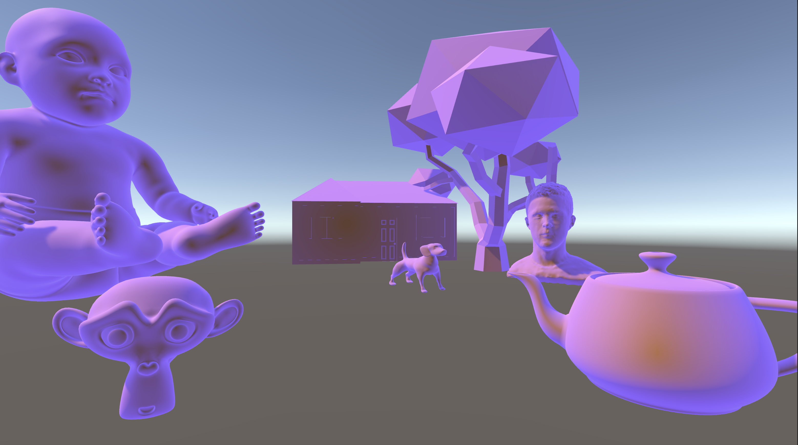
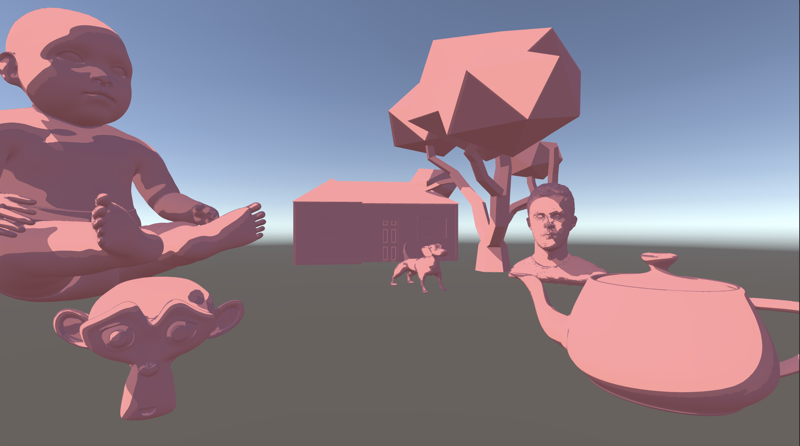
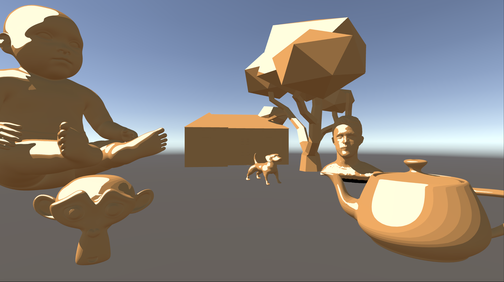
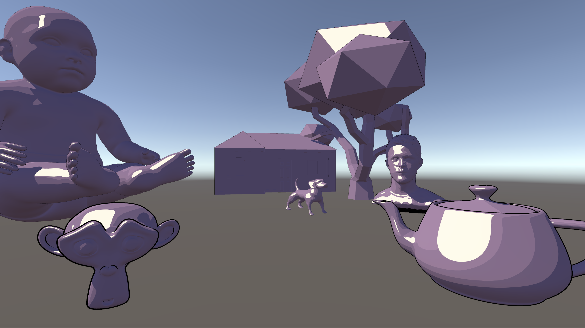
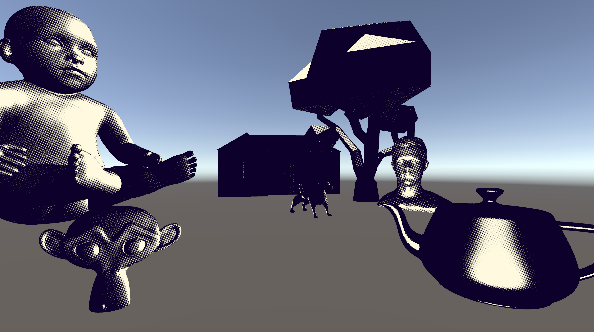
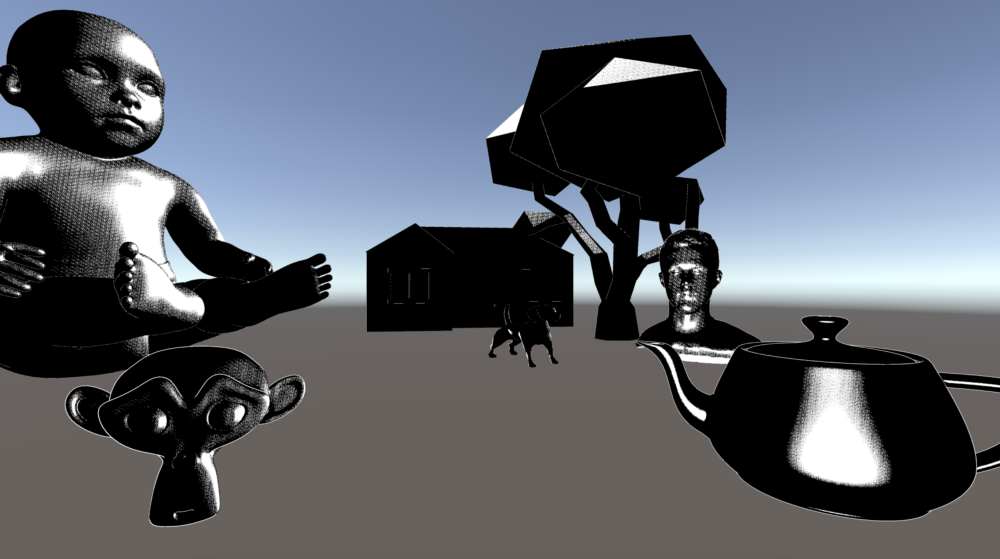
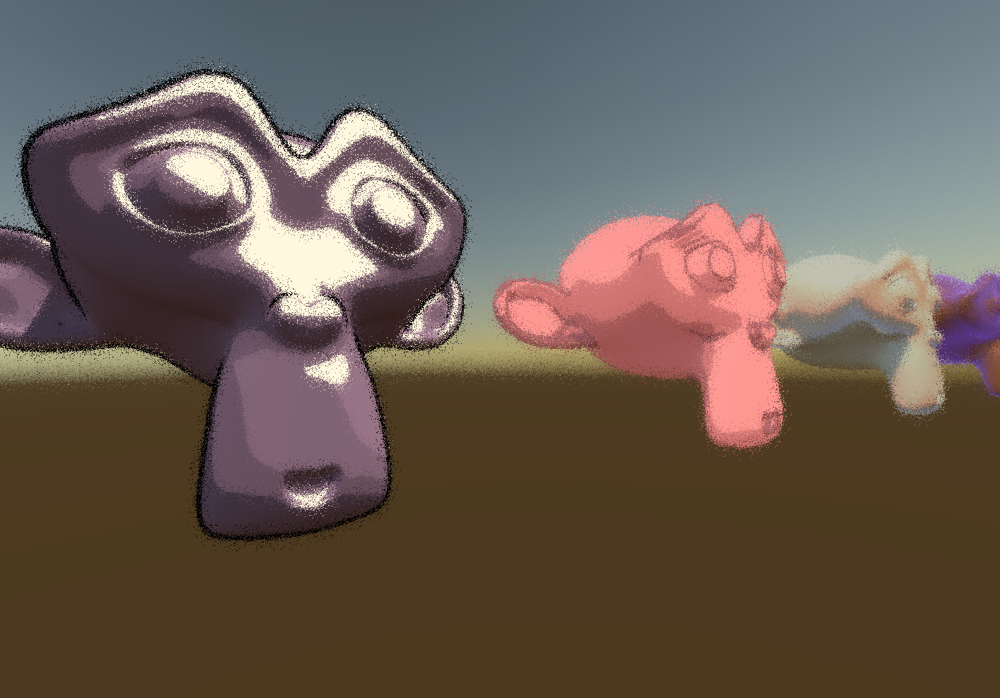

We wrote several non-photorealistic shaders in Cg/HLSL to run in Unity. Most of our work in this course has been focused on physically realistic rendering, which is desirable for many applications, but in other applications, there can be aesthetic reasons to do more stylized rendering. For example, in animation, we might want our shaders to emulate the styles of hand-drawn art. Similarly, in games, non-photorealistic shaders can be used for aesthetics but also to enhance gameplay, making it easier to see edges of objects or making important objects glow and pop out from their surroundings. For our project, we learned how to create a basic scene in Unity and how to write shaders (mostly fragment shaders, with one vertex shader) in Cg/HLSL to apply to those Unity scenes. For each shader, we exposed key parameters as properties in the Unity material panel. In a real-life application of these shaders to a game or animation project, these properties would enable artists to customize the look of each shader using sliders and color pickers without having to dive into the code.
We were especially inspired by the cel shading style of games like “Breath of the Wild” and the comic-book style of “Spider-Man: Into the Spider-Verse”. We also referred to a blog called Ronja’s Tutorials for helpful walkthroughs of Unity shader coding.
The techniques we used can be grouped into three categories: strokes/outlines, fills/shading, halftone, and bonus shaders.
Objects don’t have outlines in real life, but they often do in art. We explored a few different ways to render shape outlines.
Our first non–physically-based shader was an implementation of Fresnel shading, a common way to add a glow around the boundaries of an object. For each fragment, we add our glow color with an intensity proportional to one minus the dot product of the surface normal vector and the view direction vector.
Then we can raise this to an exponent to make sure the glow is only very visible over the surfaces that are oblique to the camera. Still, the result has a smooth transition which doesn’t match the outline we’re looking for. To convert Fresnel shading to a hard outline stroke, we threshold the dot product to set a firm stroke when the dot product is small, and show no outline when the dot product is large.
The problem with this approach is that some parts of object boundaries end up with a wider stroke than others depending on the specific geometry.
To get a more consistent stroke, we implemented hull outlining. To create a hull outline, we add a second copy of the object, called a hull, in the same location as the original object. Then we apply three modifications to the hull object: we shade it as solid black (or whatever the stroke color is), we offset all of its vertices by a small distance in the direction of their normal to make the new object expand in every direction like a wrapper around the original object, and we cull all of the front-facing faces so that we can see the original object again. We’ll just see the new object around the edges of the original object.
Our hull outline looked much better than the Fresnel shading approach, but it still didn’t add strokes to sharp edges inside the object, like valley and mountain shapes.
We tried to identify these crease-like features based on the derivative of the normal vector with respect to the fragment coordinate. If the magnitude of that derivative was large, it would correspond to a sharp edge. Although it would be infeasible to analytically differentiate the normal vector of the surface, luckily for us, HLSL and other shader languages contain a built in function called fwidth for approximating partial derivatives.
fwidth makes use of a quirk of the way modern GPUs do parallelization: 2x2 windows of 4 pixels are processed together, so it’s efficient to access the variable values of those neighboring pixels. fwidth(my_variable) returns the absolute difference of my_variable’s value for the current pixel and the value for the pixel above-or-below (depending on the current pixel’s position in its 2x2 window) plus the absolute difference with the pixel to the right-or-left.
So we take the magnitude of fwidth(normal_vector), and threshold it to draw a stroke when that magnitude is large, or show the underlying shader (e.g. cel-shading) when it’s small.
Unfortunately, the result looks pretty bad. The stroke’s edge is jaggy, and if we lower the threshold to make the strokes thick, they bring out nasty details of the object’s polygon mesh.
Later, we’ll use fwidth to anti-alias threshold boundaries in our other shaders, but to use the same trick on this shader would require access to the second derivative of the surface normal, and taking fwidth(fwidth(normal_vector)) will always return zero because of the way fwidth works.
Now, let’s look at how we implemented toon shading to stylize the way objects are “colored-in”.
A smooth, curved surface in real life will often appear shaded with a smooth gradient, but if an artist draws this surface with the “cel shading” or “toon shading” style, they might quantize that gradient onto a palette of a handful of discrete colors. (When we say “gradient” in this section, we mean it in the artistic sense, not the calculus sense.) Our basic attempt at this starts with basic diffuse shading to get an underlying value, and then thresholds this value to choose between one of two discrete colors for each fragment (with a “single step” between these two colors). We implemented this as a Unity “surface shader” so the game engine provided a shadow attenuation value, which we also thresholded to get cel-shaded shadows.
First, we tried using a hard threshold here using HLSL’s step function, but that gave jaggy borders like in the derivative stroke. Next, we tried swapping step for smoothstep, which lets us define a transition range with a linear ramp between one color and the other. This gave us smooth, non-jaggy gradients at the boundaries between the two colors, but the gradient would be wider in regions where the underlying continuous shading has a gentle gradient, and narrower in regions with a sharper underlying gradient. Finally, we set the width of smoothstep’s ramp to be based on the derivative of the underlying shading value, which we can estimate in real time using fwidth. This way, every color boundary has a nice, crisp-but-anti-aliased edge.
This image shows an example scene rendered with our single-step toon shader with derivative strokes. You can see that the derivative stroke makes the panels of the door of the house visible and also outlines Suzanne the monkey’s eyebrows and the rim of the Utah teapot.
Next, we expanded on this by adding multiple color levels and specular highlights. In physically based rendering, specular lighting is added linearly to diffuse and ambient lighting, but in the cel shading style, the specular highlight regions basically occlude the diffuse shading, so we implemented our specular lighting accordingly. When the specular value exceeds the threshold, we lerp from the diffuse shading to the specular color.
This image shows the multi-step toon shading on its own.
In this render, we tweaked the toon shading parameters that we exposed in Unity’s property panel, and added a hull outline. We decided to take out the derivative stroke because its artifacts detracted from the look of the scene.
This video with a moving light source (like the sun moving through the sky) shows the specular highlight moving over the diffuse light blocks.
Rendering images with a small set of discrete colors, whether by hand or in computer graphics, reduces the visual fidelity of gradients and flattens object contours if we apply a threshold directly to the underlying shading, as is done in cel shading. But in media with small color palettes, we can use dithering to faithfully portray shading contours. Dithering is used digitally for image formats with low color depth, like GIF. In the world of print, halftone printing in newspapers and comic books similarly dithers images to make images appear to have smooth contours using only two colors — white paper and black ink.
We created an image effect shader to convert a full-screen render to this halftone aesthetic. First, we flatten the RGB values of each pixel to a single value axis (the weights on R, G, and B are customizable in the properties panel). Then we add a pattern of offsets to these values, which is a mix of two dot patterns along with some noise from a hash function, and threshold the result. We use the same fwidth trick as before to get a smooth threshold result. Through the properties panel, we're able to experiment with different mixes of the different pattern options, the two colors, and the rotation, scale, amplitude, and translation of the pattern, as well as the number of axes for the eggbox pattern (n-axis eggbox is our own novel invention!).
We also made an object shader which applies the halftone effect on top of Blinn-Phong shading so that we could showcase the look on individual objects within a scene.
This alternative halftone shader uses a more periodic noise-like pattern which reminds us of chalk shading or a photocopy of a photocopy. One problem with actually using the halftone shaders would be that they make it difficult to make out object boundaries, so in this shader, we added a version hull shading where the hull color is thresholded to white when the object itself is dark, and black when the object itself is light, to maintain visible contrast.
Finally, this shader uses the same two-tone hull outline on top of thresholded Blinn-Phong shading to emulate the style of old black-and-white comics.
Here are two more full-screen image effect shaders.
This image effect randomly jitters the sample coordinates for each pixel by a random direction and random distance (with an customizable and range and central-tendency exponent) to make the image looks like it's dissolving.
This shader doesn’t really fit our project topic, but we wanted to share it anyway. This whole scene is generated by a fragment shader, without any underlying mesh geometry. The geometry of the scene is defined by a signed distance field (SDF) function. We trace rays into the scene using ray marching to find the implicit surface defined by the SDF. We estimate the gradient of the SDF to estimate the normal vector at each point, randomly offset that normal vector to give the surface a glittery texture, and then do Blinn-Phong shading with three light sources (also defined in the fragment shader). This style of creative shader coding is typical of an awesome international computer art subculture called the demoscene. A member of this subculture named Ivan Avdeev graciously taught one of our members last summer how to write this type of shader in GLSL in a live-coding environment called Bonzomatic.
Working on this project allowed us to explore CS184 concepts about lighting, rasterization, aliasing, etc. in a more open-ended environment where we didn't have skeleton code or specific instructions to follow. This allowed us to get a more personal understanding of the topics, and more personal pride as we went from ideation to implementation to presentation on our own ideas, like in the comic book shader used on the Bugatti, or our unique n-axis eggbox pattern in the halftone shader. We enjoyed the three-way intersection of learning the new concrete tooling of Unity and Cg/HLSL, exploring new algorithms, and exploring creative ideas.
Gabe implemented the single-step toon shader, derivative stroke, customizable halftone shader, fragment-only demoscene-style shader, and dissolve image effect shader, and wrote the text and HTML for this webpage.
Brandon Y created most of the test scenes including the necessary C# scripts: the one with the baby, the bouncing monkeys scene, and the animated sun scene, and also added the camera motion controls. He also generated the screenshots and videos for this webpage.
Uri implemented the multi-step toon shader, hull outline including the smart two-tone outline, the halftone + outline shader, and the comic book Bugatti shader, and also created the monkey lineup test scene. He also created both videos, for the milestone and final submission.
Brandon S put together the final presentation as well as the milestone slides and helped compose the objects into scenes in Unity.